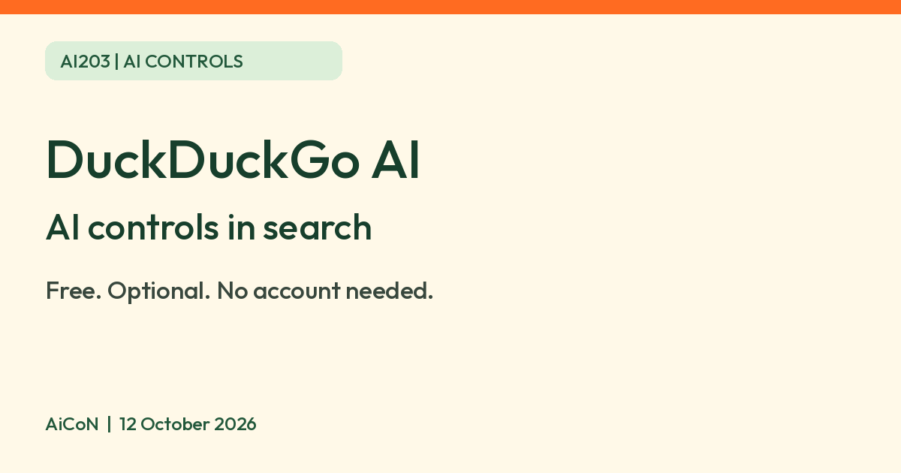

DuckDuckGo AI controls: Search Assist, Duck.ai, hide AI images and the no-AI search page
DuckDuckGo says Search Assist and Duck.ai are free, need no account and can be turned off. noai.duckduckgo.com is its search page with AI features switched off.

What it is
DuckDuckGo's help pages describe two AI features in its search: Search Assist, a short AI-written answer shown beside normal results, and Duck.ai, its chat service. DuckDuckGo says both are optional and can be turned off or tuned down. This post covers how to control them. It is not a review of the AI itself.
Is it free?
Yes. DuckDuckGo's page on its approach to AI says "Both Duck.ai and Search Assist are free to use and anonymized by us, with no account required." The controls below are settings on that same service.
What you can control
- How often Search Assist shows: DuckDuckGo says you can pick often, sometimes (the default), on-demand or never, in Search Settings or from the gear icon on an answer.
- Duck.ai: turn it off in Search Settings > AI Features, then choose Save and Exit. In the DuckDuckGo browser, the page says to use Settings > AI Features.
- AI-generated images: in the Images tab, click the AI images filter and choose Hide, or turn on "Hide AI-Generated Images" in Search Settings. The browser has a "Hide AI Images" setting under Settings > AI Features. Search Settings > General also has the image-filter control.
- No AI at all: start searches on noai.duckduckgo.com. DuckDuckGo says it works like normal search but with Search Assist and Duck.ai off and AI-generated images filtered out by default. There are also No-AI extensions for Chrome and Firefox. The browser also offers Settings > AI Features > Use DuckDuckGo Without AI.
What to know about the limits
- DuckDuckGo says its AI-image filter uses public blocklists and is "not exhaustive". Some AI images may still show.
- Search Assist answers are auto-generated from web pages and link to one or two sources. DuckDuckGo says to remember they are auto-generated from cited sources. AiCoN advice: answers can be wrong, so open the source for anything that matters.
Privacy
DuckDuckGo says its AI features do not track how you use them or train on your data, and that its search engine does not collect your search history. These are DuckDuckGo's statements. We did not test them.
India
The help pages we read do not list countries or mention India for these settings. We did not test them from India. Check Search Settings on your own device.
Frequently asked questions
Do I need an account?
DuckDuckGo says no account is required for Duck.ai or Search Assist.
Can I get search without any AI?
DuckDuckGo says noai.duckduckgo.com turns off Search Assist and Duck.ai and filters AI images by default.
Will every AI image be hidden?
No. DuckDuckGo says its filter is not exhaustive.
What changed since this post?
Five official DuckDuckGo help pages rechecked 12 October 2026. Confirmed free/no-account claims, frequency options, Duck.ai off controls, the no-AI search route and Chrome/Firefox extensions. Added the browser's Use DuckDuckGo Without AI option and kept the public-blocklist filter limitation explicit. Source-checking advice is labelled AiCoN advice, not a quote from the help page. No settings, privacy or India availability test was performed.
Sources: DuckDuckGo's approach to AI, Opting out of AI, About noai.duckduckgo.com, About Search Assist, Filter out AI images. Checked 12 October 2026.